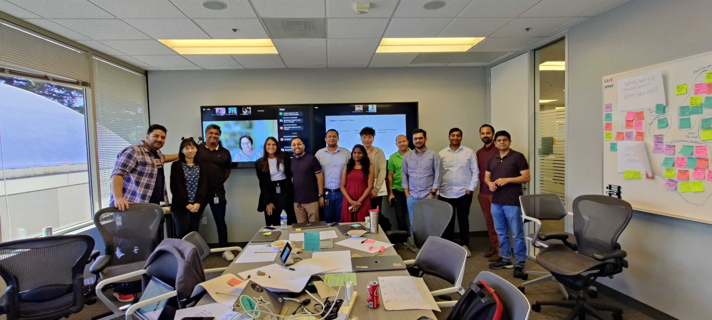

Building products and teams that balance speed with discovery, AI with human insight, and innovation with trust.

I'm a UX researcher by training—with dual master's degrees in Sociology and Social Policy from Brandeis University—who evolved into product and design strategy leadership by consistently translating deep user insight into strategic direction that drives measurable business impact.
My research foundation shapes everything I do: I approach product strategy with the rigor of understanding user needs first, design decisions with the discipline of validating assumptions, and organizational transformation with the lens of how people actually work. This researcher-turned-strategist perspective means I don't just advocate for users—I build the frameworks, processes, and cross-functional alignment that make user-centered decision-making scale across entire organizations.
At eBay, this approach has meant advising C-suite on strategic investments backed by research narratives, ruthlessly prioritizing features based on jobs-to-be-done frameworks, and building processes (like design sprint toolkits) that keep discovery in the product development cycle even when teams need to move fast.
I believe AI should amplify human creativity and problem-solving, not replace it. My work focuses on helping teams integrate AI tools that accelerate execution—synthesis, prototyping, data visualization—while protecting the discovery processes and deep customer understanding that actually differentiate products.
Research isn't just a phase in the product development cycle—it's a competitive advantage for de-risking bold decisions and building products people actually trust. I've built my career on translating user insights into executive narratives that drive strategic investment and cross-organizational alignment.
Whether it's financial products, marketplace experiences, or AI-powered features, user trust is the foundation. I specialize in balancing innovation with the transparency, clarity, and safety that build lasting trust—especially in spaces where getting it wrong has real consequences.
I'm known as a dot connector who cuts through ambiguity, drives ruthless prioritization, and acts as a force-multiplier for cross-functional teams. My superpowers are:
Master of Arts in Sociology | Brandeis University
Master of Arts in Social Policy | Brandeis University
Bachelor of Science in Sociology, Psychology, & Applied Statistics | Grand Valley State University